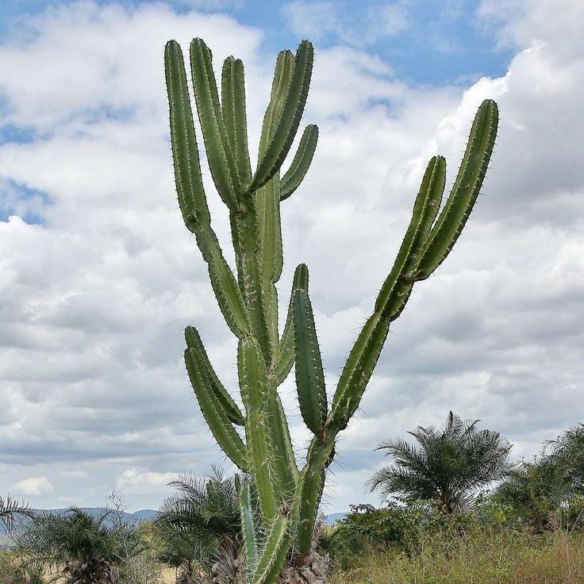

Mandacaru (Cereus jamacaru)
Origem: Região Nordeste do Brasil, especialmente na Caatinga.
Curiosidade: É uma planta adaptada ao clima semiárido, capaz de sobreviver a longos períodos de estiagem.

Origem: Região Nordeste do Brasil, especialmente na Caatinga.
Curiosidade: É uma planta adaptada ao clima semiárido, capaz de sobreviver a longos períodos de estiagem.
